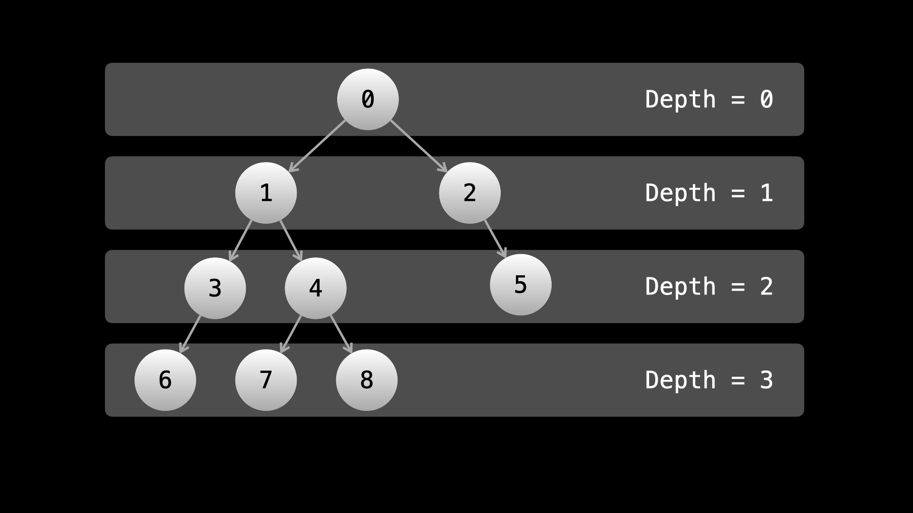

Intuition
If you are not familiar with BFS traversal, we suggest you read our relevant LeetCode Explore Card.
BFS is perfect when we are dealing specifically with rows/levels of a binary tree. With BFS, we handle one row of the tree at a time.
Here, we need to find the maximum value in each row. We can simply perform a BFS and for each row, keep track of the
maximum value we have seen so far. We will initialize an integer currMax to a small value like negative
infinity. Then we go through the row and try to update currMax when we see larger values. After
handling the row, we add currMax to our answer.
Algorithm
root is null (empty) tree, just return an empty list.ans and a queue with the root to perform BFS.
queue is not empty:
currMax to a small value and save the length of the queue in
currentLength.
currentLength times:
node from the queue.currMax with node.val if it is larger.node, if it is not null, push it to the queue.currMax to ans.ans.Implementation
Java
class Solution {
public List largestValues(TreeNode root) {
if (root == null) {
return new ArrayList();
}
List ans = new ArrayList();
Queue queue = new LinkedList<>();
queue.add(root);
while (!queue.isEmpty()) {
int currentLength = queue.size();
int currMax = Integer.MIN_VALUE;
for (int i = 0; i < currentLength; i++) {
TreeNode node = queue.remove();
currMax = Math.max(currMax, node.val);
if (node.left != null) {
queue.add(node.left);
}
if (node.right != null) {
queue.add(node.right);
}
}
ans.add(currMax);
}
return ans;
}
}
C++
class Solution {
public:
vector largestValues(TreeNode* root) {
if (root == nullptr) {
return vector{};
}
vector ans;
queue queue;
queue.push(root);
while (!queue.empty()) {
int currentLength = queue.size();
int currMax = INT_MIN;
for (int i = 0; i < currentLength; i++) {
TreeNode* node = queue.front();
queue.pop();
currMax = max(currMax, node->val);
if (node->left) {
queue.push(node->left);
}
if (node->right) {
queue.push(node->right);
}
}
ans.push_back(currMax);
}
return ans;
}
};
Python3
class Solution:
def largestValues(self, root: Optional[TreeNode]) -> List[int]:
if not root:
return []
ans = []
queue = deque([root])
while queue:
current_length = len(queue)
curr_max = float("-inf")
for _ in range(current_length):
node = queue.popleft()
curr_max = max(curr_max, node.val)
if node.left:
queue.append(node.left)
if node.right:
queue.append(node.right)
ans.append(curr_max)
return ans
Complexity Analysis
Given nn as the number of nodes in the tree,
Time complexity: O(n)O(n)
During the BFS, we visit each node in the tree once. At each node, we perform O(1)O(1) work.
Space complexity: O(n)O(n)
In a perfect binary tree, the final row has O(n2)=O(n)O(\frac{n}{2}) = O(n) nodes, all of
which will be in queue.
Intuition
Note: This problem is perfect for BFS, but an interviewer might you to implement DFS as a follow-up. We have included a DFS approach for completeness.
In BFS, we handle each row explicitly, so it's easy to just keep track of the maximum value as we traverse through the row.
In DFS, the order in which we move through the tree is not related to the rows. Thus, we need to be more creative to find the maximum value in each row. The first observation to make is that each row can be described by the depth of its nodes.

The depth of a node is its distance from the root. The root has a depth of 0, and every child has a
depth of 1 greater than its parent. You may also notice that in terms of indices, each node's depth
corresponds to its index in the answer.
For example, if ans is our answer list, then ans[2] holds the maximum value of all nodes
with depth 2.
If we keep track of each node's depth during the traversal, then we can update ans directly. How do we
keep track of the depth? We will pass an additional argument depth in our dfs function.
When we initially call dfs with root, we will pass depth = 0. When we call
dfs on a child, we will pass depth + 1.
There is one problem: how do we know what length ans should be? We will initialize ans as
an empty list. If we are at a depth that would be out of bounds if we tried to access
ans[depth], then we will simply initialize the current node.val as the maximum value seen
at depth so far by pushing node.val to ans.
Algorithm
ans as an empty list.dfs(node, depth):
node is null, return.depth == ans.length, then push node.val to ans. Otherwise, try
to update ans[depth] with node.val if its larger.
dfs on node.left and node.right with depth + 1
as the second argument.
dfs(root, 0) and then return ans.Implementation
Java
class Solution {
List ans;
public List largestValues(TreeNode root) {
ans = new ArrayList();
dfs(root, 0);
return ans;
}
public void dfs(TreeNode node, int depth) {
if (node == null) {
return;
}
if (depth == ans.size()) {
ans.add(node.val);
} else {
ans.set(depth, Math.max(ans.get(depth), node.val));
}
dfs(node.left, depth + 1);
dfs(node.right, depth + 1);
}
}
C++
class Solution {
public:
vector ans;
vector largestValues(TreeNode* root) {
dfs(root, 0);
return ans;
}
void dfs(TreeNode* node, int depth) {
if (node == nullptr) {
return;
}
if (depth == ans.size()) {
ans.push_back(node->val);
} else {
ans[depth] = max(ans[depth], node->val);
}
dfs(node->left, depth + 1);
dfs(node->right, depth + 1);
}
};
Python3
class Solution:
def largestValues(self, root: Optional[TreeNode]) -> List[int]:
def dfs(node, depth):
if not node:
return
if depth == len(ans):
ans.append(node.val)
else:
ans[depth] = max(ans[depth], node.val)
dfs(node.left, depth + 1)
dfs(node.right, depth + 1)
ans = []
dfs(root, 0)
return ans
Complexity Analysis
Given nn as the number of nodes in the tree and hh as the max depth of the tree,
Time complexity: O(n)O(n)
During the DFS, we visit each node in the tree once. At each node, we perform O(1)O(1) work.
Space complexity: O(h)O(h)
We use extra space for the recursion call stack. The most calls in the call stack at any given time will be the max depth of the tree. In the worst-case scenario where the tree is like a linked list, the max depth will be O(n)O(n).
Intuition
We can also implement DFS iteratively using a stack. Each entry in the stack will be a pair node, depth.
We will use a while loop to perform the DFS, with each iteration being analogous to a function call from the
previous approach. As such, we will perform the same process in each while loop iteration: try to update
ans with node.val, then push the children of node to the stack if they exist.
Algorithm
root is null (empty) tree, just return an empty list.ans and a stack with (root, 0).stack is not empty:
(node, depth) from the stack.depth == ans.length, then push node.val to ans. Otherwise, try
to update ans[depth] with node.val if its larger.
node.left is not null, push (node.left, depth + 1) to stack.
node.right is not null, push (node.right, depth + 1) to stack.
ans.Implementation
Java
class Solution {
public List largestValues(TreeNode root) {
if (root == null) {
return new ArrayList();
}
List ans = new ArrayList<>();
Stack> stack = new Stack<>();
stack.push(new Pair<>(root, 0));
while (!stack.isEmpty()) {
Pair pair = stack.pop();
TreeNode node = pair.getKey();
int depth = pair.getValue();
if (depth == ans.size()) {
ans.add(node.val);
} else {
ans.set(depth, Math.max(ans.get(depth), node.val));
}
if (node.left != null) {
stack.push(new Pair<>(node.left, depth + 1));
}
if (node.right != null) {
stack.push(new Pair<>(node.right, depth + 1));
}
}
return ans;
}
}
C++
class Solution {
public:
vector largestValues(TreeNode* root) {
if (root == nullptr) {
return vector{};
}
vector ans;
stack> stack;
stack.push(make_pair(root, 0));
while (!stack.empty()) {
pair pair = stack.top();
stack.pop();
TreeNode* node = pair.first;
int depth = pair.second;
if (depth == ans.size()) {
ans.push_back(node->val);
} else {
ans[depth] = max(ans[depth], node->val);
}
if (node->left) {
stack.push(make_pair(node->left, depth + 1));
}
if (node->right) {
stack.push(make_pair(node->right, depth + 1));
}
}
return ans;
}
};
Python3
class Solution:
def largestValues(self, root: Optional[TreeNode]) -> List[int]:
if not root:
return []
ans = []
stack = [(root, 0)]
while stack:
node, depth = stack.pop()
if depth == len(ans):
ans.append(node.val)
else:
ans[depth] = max(ans[depth], node.val)
if node.left:
stack.append((node.left, depth + 1))
if node.right:
stack.append((node.right, depth + 1))
return ans
Complexity Analysis
Given nn as the number of nodes in the tree and hh as the max depth of the tree,
Time complexity: O(n)O(n)
During the DFS, we visit each node in the tree once. At each node, we perform O(1)O(1) work.
Space complexity: O(h)O(h)
We use extra space for the recursion call stack. The most calls in the call stack at any given time will be the max depth of the tree. In the worst-case scenario where the tree is like a linked list, the max depth will be O(n)O(n).
We pop the top node from the stack and then push its child nodes onto the stack based on the DFS traversal strategy. This process of pushing and popping forms a path-like structure within the stack, and the length of this path will not exceed the height of the tree. Therefore, O(h)O(h) space will be used.